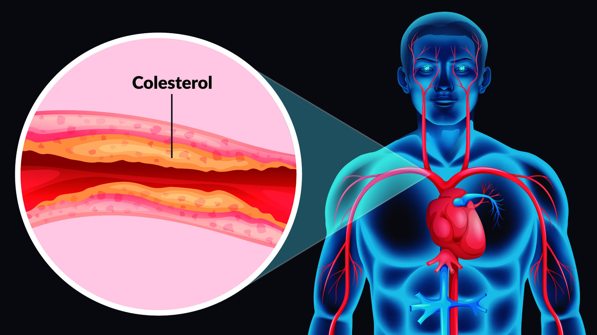

Colesterol alto
El colesterol es una sustancia cerosa que se encuentra en la sangre. El cuerpo necesita colesterol para formar células sanas, pero tener altos niveles de colesterol puede aumentar el riesgo de sufrir una enfermedad cardíaca.

Causas
El colesterol alto puede heredarse, pero suele ser el resultado de un estilo de vida poco saludable. Llevar una dieta rica en grasas saturadas, la falta de actividad física, la obesidad y el tabaquismo son las causas principales.
Síntomas
- El colesterol alto no tiene síntomas visibles ni signos de advertencia.
- Un análisis de sangre es la única manera de detectar si lo tiene.
Pruebas y exámenes
Para diagnosticar el colesterol alto se utiliza un análisis de sangre llamado panel lipídico o perfil lipídico. Esta prueba mide el colesterol total, el colesterol LDL (malo), el colesterol HDL (bueno) y los triglicéridos.
Tratamiento
Los cambios en el estilo de vida son la primera línea de defensa. Esto incluye seguir una dieta cardiosaludable, hacer ejercicio regularmente y dejar de fumar. Si estos cambios no son suficientes, el médico puede recetar medicamentos conocidos como estatinas.
Expectativas (pronóstico)
Si no se trata, el colesterol alto puede provocar la acumulación de placas en las arterias (aterosclerosis), lo que aumenta el riesgo de infarto de miocardio o accidente cerebrovascular. Con tratamiento y cambios en el estilo de vida, se puede controlar eficazmente.